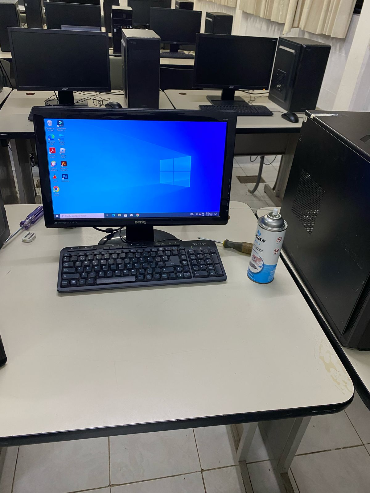

Materiales
Pistola de Aire, Cepillos sensibles, Desarmador, Pasta Termica.
Pistola de Aire, Cepillos sensibles, Desarmador, Pasta Termica.
con la pistola de Aire, sopla en cada rincon del gabinete para que solde todo el polvo.
Con un borrador de goma, se limpia cuidadosamente los pines de cobre de la memoria.
Se quita los 4 tornillos del dicipador y procede la Limpieza.
Cuidadosamente se levantó el procesador, se limpio con un trapo y un poco de alcohol isopropilico

Se le agrega nueva pasta, como sugencia con 2 gotas en el centro del procesador es sufuciente.
Al Finalizar encender la computadora para ver los resultados en su rendimiento.
Gracias